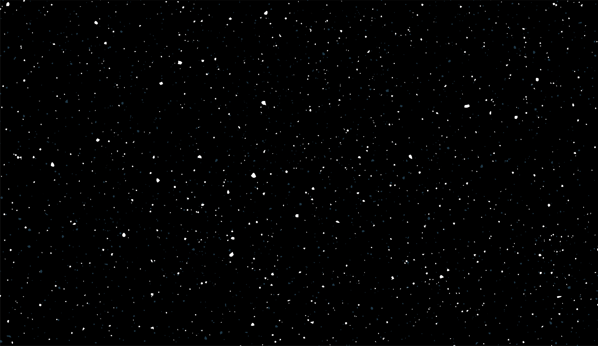

Despre
Sistemul solar este format din Soare împreună cu sistemul său planetar (care cuprinde opt planete împreună cu sateliții lor naturali) și alte obiecte non-stelare. Sistemul este situat într-unul dintre brațele exterioare ale galaxiei Calea Lactee (mai precis în Brațul Orion), galaxie care are cca. 200 de miliarde de stele. El s-a format acum 4,6 miliarde de ani, ca urmare a colapsului gravitațional al unui gigant nor molecular. Cel mai masiv obiect este steaua centrală - Soarele, al doilea obiect ca masă fiind planeta Jupiter. Cele patru planete interioare mici, Mercur, Venus, Pământul și Marte, numite planete terestre / planete telurice, sunt compuse în principal din roci și metal. Cele patru planete exterioare, numite giganți gazoși, sunt mult mai masive decât cele telurice. Cele mai mari două planete, Jupiter și Saturn, sunt compuse în principal din hidrogen și heliu; cele două planete mai îndepărtate, Uranus și Neptun, sunt compuse în mare parte din substanțe cu o temperatură de topire relativ ridicată (comparativ cu hidrogenul și heliu), numite ghețuri, cum ar fi apa, amoniacul și metanul. Ele sunt denumite „giganți de gheață” (termen distinct de cel de „gigant gazos”). Toate planetele au orbite aproape circulare dispuse într-un disc aproape plat numit plan ecliptic.
Diverse
Descoperire si explorare
Timp de câteva mii de ani umanitatea, cu puține excepții, nu a recunoscut existența sistemului solar. Oamenii credeau că Pământul se află în centrul Universului și este cu totul diferit de celelalte obiecte divine și eterice care se mișcă pe cer. Deși filozoful grec Aristarh din Samos a speculat despre reorganizarea heliocentrică a cosmosului, Nicolaus Copernicus a fost primul astronom care a dezvoltat un sistem matematic heliocentric predictiv. Succesorii săi din secolul al XVII-lea (Galileo Galilei, Johannes Kepler și Isaac Newton) au avut o înțelegere a fizicii care i-a condus la admiterea graduală a ideii că Pământul se rotește de fapt în jurul Soarelui și că celelalte planete sunt guvernate de aceleași legi ale fizicii care guvernează și Pământul. În plus, inventarea telescopului a condus la descoperirea unor planete și sateliți noi. În timpurile mai recente, îmbunătățiri ale telescoapelor și folosirea navelor spațiale fără echipaj au deschis drumul studierii fenomenelor geologice din sistemul solar (studiul munților și craterelor de impact) și a fenomenelor meteorologice sezoniere de pe unele planete (cum ar fi norii, furtunile de nisip și calotele de gheață).
Structura si compozitie
Componentul principal al sistemului solar este Soarele, o stea de tip G2 din secvența principală ce conține 99,86 % din masa cunoscută a sistemului și îl domină din punct de vedere gravitațional. Cele mai mari patru corpuri ce orbitează în jurul Soarelui, giganții gazoși, constituie circa 99% din masa rămasă, Jupiter și Saturn deținând împreună mai mult de 90%. Majoritatea obiectelor mari care orbitează în jurul Soarelui se află în apropierea planului orbitei Pământului, cunoscut și ca ecliptică. Orbitele planetelor sunt foarte apropiate de ecliptică în timp ce orbitele cometelor și ale obiectelor din centura Kuiper au adesea unghiuri de intersecție cu ecliptica destul de mari.[21][22] Toate planetele și majoritatea celorlalte obiecte orbitează în jurul Soarelui în aceeași direcție în care se rotește acesta (în sens invers acelor de ceasornic, privit de deasupra polului nordic solar). Există excepții, cum ar fi cometa Halley.
Geneza si evolutie
Sistemul solar s-a format acum 4,568 miliarde de ani, în urma colapsului gravitațional al unei regiuni din cadrul unui vast nor molecular. Acest nor inițial avea un diametru de mai mulți ani-lumină și a dat naștere, probabil, mai multor stele. La fel ca și majoritatea norilor moleculari, acesta era constituit, în principal, din hidrogen, mai puțin heliu și cantități mici de elemente mai grele formate în generațiile anterioare de stele. Când regiunea care avea să devină sistemul solar, denumită și nebuloasă pre-solară, a suferit un colaps, conservarea momentului cinetic a determinat-o să se rotească mai repede. Centrul, unde s-a concentrat cea mai mare parte a masei, a devenit din ce în ce mai fierbinte în raport cu discul din jur. Nebuloasa în contracție, rotindu-se tot mai repede, a început să se aplatizeze și a luat forma unui disc protoplanetar cu un diametru de aproximativ 200 UA, având o protostea fierbinte și densă în centru. Protoplanetele formate în urma acreției din acest disc de praf și gaz interacționau gravitațional, formând - prin contopire - corpuri din ce în ce mai mari. Sute de protoplanete au putut exista în sistemul solar timpuriu, dar acestea fie au fuzionat, fie au fost distruse, formând planete și planete pitice, iar resturile devenind obiecte minore.